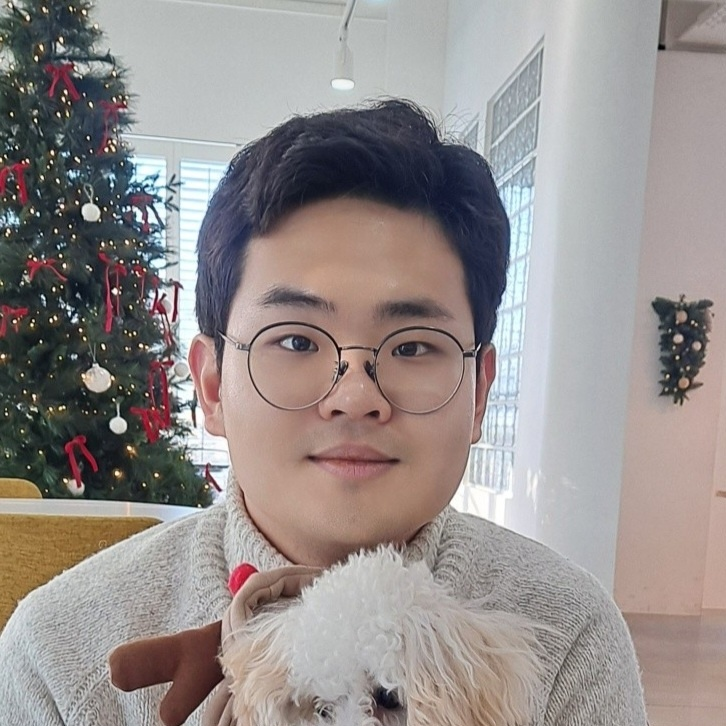

Won-Seok Choi

My current research goal is to design a cognitive agent that can understand the dynamic environment through active interactions. To achieve this, an agent should deal with critical problems such as lack of additional information, data imbalance, distribution shifts, and physical embodiment limitations. Specifically, my research topics and interests belong to:
[New! 02.2026] Expected graduation (ABD)
[09.2019 ~ Current] Ph.D. Candidate at Seoul National University (Prof. Byoung-Tak Zhang)
[03.2015 ~ 08.2019] Bachelor’s degree in CSE at Seoul National University
[03.2013 ~ 02.2015] Graduated Chungnam Science High School
[AAAI 2026] Program committee (Reviewer), AAAI-26
[NeurIPS 2024] Reviewer, NeuIPS SSLTheoryPractice workshop
[2021-S ~ 2025-F] 인공지능 만들기, K-MOOC online lecture, Teaching Assistant
[2020 ~ 2022] Samsung NPEX Course, Teaching Assistant
[2020-F, 2022-F] Artificial Neural Networks, dept.CSE, SNU, Teaching Assistant
[2019-F] Machine Learning, dept.CSE, SNU, Teaching Assistant
I currently have a work in progress (WIP) that has been submitted to the Neurocomputing journal. A preliminary preprint version of this manuscript (formatted according to ICCV style) have been uploaded to arXiv. The uploaded version will be updated in accordance with the journal's review process.
DUEL: Duplicate Elimination on Active Memory for Self-Supervised Class-Imbalanced Learning
Won-Seok Choi, Hyundo Lee, Dong-Sig Han, Junseok Park, Heeyeon Koo, Byoung-Tak Zhang The 38th Annual AAAI Conference on Artificial Intelligence (AAAI 2024) [paper]
Unveiling the Significance of Toddler-Inspired Reward Transition in Goal-Oriented Reinforcement Learning
Junseok Park, Yoonsung Kim, Hee bin Yoo, Min Whoo Lee, Kibeom Kim, Won-Seok Choi, Minsu Lee, Byoung-Tak Zhang The 38th Annual AAAI Conference on Artificial Intelligence (AAAI 2024) [paper]
Learning Geometry-aware Representations by Sketching
Hyundo Lee, Inwoo Hwang, Hyunsung Go, Won-Seok Choi, Kibeom Kim, Byoung-Tak Zhang The IEEE/CVF Conference on Computer Vision and Pattern Recognition 2023 (CVPR 2023) [paper]
Message passing adaptive resonance theory for online active semi-supervised learning
Taehyeong Kim, Injune Hwang, Hyundo Lee, Hyunseo Kim, Won-Seok Choi, Joseph J Lim, Byoung-Tak Zhang International Conference on Machine Learning 2021 (ICML 2021) [paper]